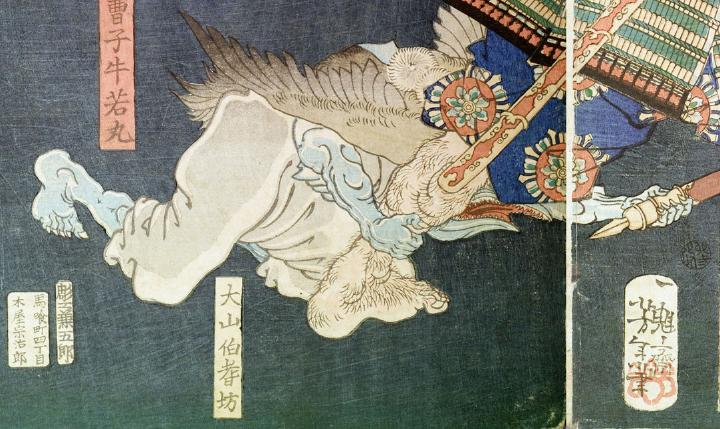

天狗；テング，嘴；クチバシ，翼；ツバサ，結袈裟；ユイゲサ

天狗。大山伯耆坊。肌は青白く、口は嘴のようになり、小さく鋭い歯が並んでいる。白い着物と袴をまとい、白い結袈裟をかけている。背から灰色の翼を生やしている。地に這いつくばり、右手で人間の足を、左手で薙刀の柄の尻を掴んでいる。
著作者：一魁齋芳年（月岡芳年）／出典：親書誌：U426_nichibunken_0138：五條の月；ゴジョウノツキ／日付：2009／資源識別子：U426_nichibunken_0138_0001_0003
Copyright (c)2010- International Research Center for Japanese Studies, Kyoto, Japan. All rights reserved.